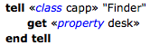

|
Raw (Chevron) Syntax |
|
Script Debugger lets you view, in a script window, the raw Apple event codes corresponding to dictionary terminology within a compiled script. This can help explain terminology clashes and other unexpected AppleScript phenomena, and can give you a deeper understanding of the Apple events that your script is constructing and sending.
To view raw Apple event codes:
- Choose View > Show Raw (Chevron) Syntax.
If the menu item is checked, raw Apple event codes are showing.

You can also see raw Apple event codes in the dictionary, in an outliner, and in the event log.
If you’re seeing raw Apple event codes unexpectedly in a newly opened script, it may be because something has gone wrong with the decompilation process.